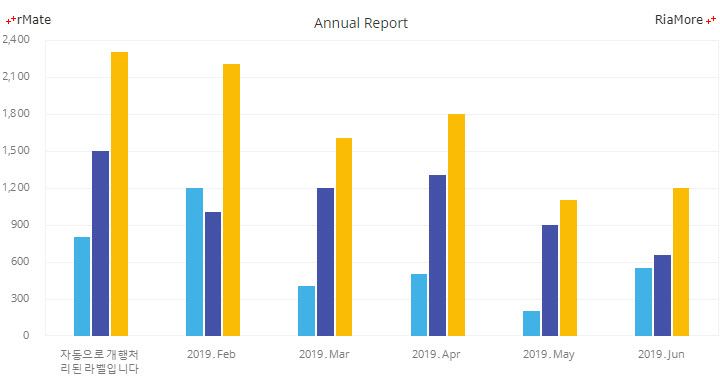

축 스타일링과 축 레이블
다음 그림은 축을 구성하는 요소들을 표시한 것입니다. 각 구성 요소에는 번호가 표시되어 있는데 이에 대한 명칭과 설명은 아래 표와 같습니다.
| 번호 |
구성 요소에 대한 명칭 |
설명 |
| 1 |
축 레이블
|
축의 틱(눈금)에 표시되는 숫자 (<LinearAxis>, <ColorAxis>), 날짜(<DateTimeAxis>) 혹은 문자(<CategoryAxis>)입니다.
|
| 2 |
보조 틱 |
축의 보조 눈금입니다.
|
| 3 |
틱
|
축의 눈금입니다.
|
| 4 |
축 숫자 간격 |
숫자 레이블이 표시될 때 이웃하는 숫자 사이의 간격(그림상에서 숫자 사이의 간격은 500)입니다.
|
| 5 |
축 선 스타일 |
축 선의 스타일입니다. 그림상에서는 3D 축이 표현되었습니다.
|
| 6 |
축 제목 |
축의 제목(타이틀) 입니다. 그림상에서는 수평축(X 축)에만 표시되어 있고, 수직축(Y 축)에는 생략되었습니다.
|
| 7 |
틱에 대한 레이블의 위치 |
그림상에는 레이블이 틱 아래에 위치합니다. 레이블을 틱과 틱 사이에 표시할 수도 있습니다.
|
축 레이블에 폰트와 스타일 설정하기
축 레이블에 대한 폰트, 스타일 등에 대한 설정은 2D 축일 경우 <Axis2DRenderer> 노드, 3D 축일 경우 <Axis3DRenderer> 노드를 정의함으로써 가능합니다.
작업할 노드의 styleName 속성값에 스타일명을 지정하고, 지정된 스타일명으로 CSS 스타일을 작성하여 <Style> 노드에 정의합니다.
다음은 X 축 레이블의 폰트 크기를 14px, 색상을 붉은색(#ff0000)으로 설정하는 코드와 이를 적용해서 출력한 차트의 예입니다.
이 때 주의할 점은 <Style> 노드에 정의되는 스타일명은 반드시 마침표(.)로 시작해야 한다는 것입니다.
<horizontalAxis>
<CategoryAxis id="hAxis" categoryField="Country"/>
</horizontalAxis>
...
<horizontalAxisRenderers>
<Axis2DRenderer axis="{hAxis}" styleName="axisLabel" showLine="true"/>
</horizontalAxisRenderers>
...
<Style>.axisLabel{fontSize:14px;color:#ff0000;}
</Style>
See the CodePen 알메이트 차트 - 축 레이블에 폰트와 스타일 설정하기
축 레이블에 포맷터 적용하기
포맷터를 적용해서 축 레이블을 표현할 수 있습니다.
포맷터에 대한 자세한 사용법은 포맷터 사용하기를 참조하십시요.
축 레이블에는 알메이트 차트가 지원하는 3 가지 포맷터 (숫자 포맷터, 통화 포맷터, 날짜 포맷터)를 모두를 적용할 수 있습니다.
다음은 천단위 콤마를 Y 축 레이블에 표시하기 위한 코드와 이를 적용해서 출력한 차트의 예제입니다.
<NumberFormatter id="numfmt" useThousandsSeparator="true"/>
...
<verticalAxis>
<LinearAxis interval="500" formatter="{numfmt}"/>
</verticalAxis>
See the CodePen 알메이트 차트 - 축 레이블에 포맷터 적용하기
축 레이블 회전하기
<Style> 노드에 축 레이블의 CSS 스타일을 설정하여 축 레이블을 회전하여 표시할 수 있습니다.
다음은 X 축 레이블을 45 도 회전하여 표시하기 위한 코드와 이를 적용해서 출력한 차트의 예제입니다.
<horizontalAxisRenderers>
<Axis2DRenderer axis="{hAxis}" styleName="xAxisStyle" showLine="true"/>
</horizontalAxisRenderers>
...
<Style>.xAxisStyle {fontFamily:"Malgun Gothic";fontSize:11;labelRotation:45;}
</Style>
See the CodePen 알메이트 차트 - 축 레이블 회전하기
그룹 레이블 표현하기
카테고리 축에 표시되는 레이블을 그루핑하여 그룹명을 함께 표시할 수 있습니다.
예를 들어, 월에 대해서는 이를 분기로 분기에 대해서는 이를 년으로 그루핑할 수 있습니다.
그룹 레이블을 차트에 표현하기 위해서는 차트 데이터 객체 정의 시에 그루핑 필드(필드명은 <CategoryAxis> 노드의 groupCategoryField 속성에 설정되는 값)와 아이템 필드(필드명은 items)를 설정해야 합니다.
다음은 이에 대한 코드와 이를 적용해서 출력한 차트의 예제입니다.
groupCategoryField 속성의 기본값은 “groupCategory” 이며, groupCategoryField 속성 설정이 생략되면 자동으로 “groupCategory” 으로 설정됩니다.
<horizontalAxis>
<CategoryAxis categoryField="Month" groupCategoryField="groupCategory"/>
</horizontalAxis>
var chartData = [{
"groupCategory" : "Year",
"items": [{
"groupCategory" : "1/4",
"items" : [{"Month":"Jan","Profit":900},
{"Month":"Feb","Profit":1400},
{"Month":"Mar","Profit":1500}]
},{
"groupCategory" : "2/4",
"items" : [{"Month":"Apr","Profit":1900},
{"Month":"May","Profit":1400},
{"Month":"Jun","Profit":2000}]
},{
"groupCategory" : "3/4",
"items" : [{"Month":"Jul","Profit":1800},
{"Month":"Aug","Profit":2500},
{"Month":"Sep","Profit":3000}]
},{
"groupCategory" : "4/4",
"items": [{"Month":"Oct","Profit":2000},
{"Month":"Nov","Profit":2100},
{"Month":"Dec","Profit":1700}]
}]
}];
See the CodePen 알메이트 차트 - 그룹 레이블 표현하기
축 레이블 겹침
알메이트 차트는 모든 축 레이블을 표시하기에 충분한 공간이 없을 경우, 일부 레이블을 생략하여 겹치는 문제를 자동으로 해결합니다.
다음은 X 축 레이블이 겹치는 문제를 없애기 위해서 최초 레이블(South Sudan)이 표시된 후 두번째 레이블부터는 번갈아 가면서 생략되는 예를 보여줍니다.
var chartData = [
{"Country":"South Sudan", "GDP":20},
{"Country":"Libya", "GDP":30},
{"Country":"Sierra Leone", "GDP":51.2},
{"Country":"Mongolia", "GDP":44.5},
{"Country":"Paraguay", "GDP":62.35},
{"Country":"Timor Leste", "GDP":84.46},
{"Country":"Iraq", "GDP":48.9},
{"Country":"Panama", "GDP":38},
{"Country":"Gambia", "GDP":60.5},
{"Country":"Mozambique", "GDP":40.1}
];
만약 레이블이 겹치는 것을 무시하고 모든 레이블을 차트에 표시하고 싶으면 다음과 같이 <Axis2DRenderer> (혹은 <Axis3DRenderer>) 노드의 canDropLabels 속성값을 “false” (기본값: “true”)로 설정하면 됩니다.
<horizontalAxisRenderers>
<Axis2DRenderer axis="{hAxis}" styleName="axisLabel" showLine="true" canDropLabels="false" />
</horizontalAxisRenderers>
레이블이 겹치지 않고 모두 표시되기를 원할 경우, canStagger 속성값을 “true” (기본값: “false”)로 설정할 수 있습니다.
canStagger 속성값이 “true” 로 설정되면 축 레이블이 두 단계로 표현되어 거의 대부분의 레이블이 안겹친 상태로 표시될 수 있습니다.
이에 대한 결과는 아래와 같습니다.
<horizontalAxisRenderers>
<Axis2DRenderer axis="{hAxis}" styleName="axisLabel" showLine="true" canDropLabels="false" canStagger="true" />
</horizontalAxisRenderers>
canStagger 속성을 이용하지 않고 전체 레이블을 안 겹치게 표현하는 또 다른 방법은 데이터 설정 시에 <br> 태그를 텍스트에 삽입하는 것입니다.
다음은 이에 대한 코드와 이를 적용해서 출력한 차트의 예제입니다.
var chartData = [
{"Country":"South<br>Sudan", "GDP":20},
{"Country":"Libya", "GDP":30},
{"Country":"Sierra<br>Leone", "GDP":51.2},
{"Country":"Mongolia", "GDP":44.5},
{"Country":"Paraguay", "GDP":62.35},
{"Country":"Timor<br>Leste", "GDP":84.46},
{"Country":"Iraq", "GDP":48.9},
{"Country":"Panama", "GDP":38},
{"Country":"Gambia", "GDP":60.5},
{"Country":"Mozam-<br>bique", "GDP":40.1}
];
태그를 이용하여 레이블이 겹치지 않도록 표시" />
사용자 정의 축 레이블 표현하기
자바스크립트 함수(사용자 정의 함수)를 이용해서 텍스트를 포맷팅한 후 이를 리턴한 값을 축 레이블로 표시할 수 있습니다.
사용자 정의 함수에 대한 자세한 사용법은 사용자 정의 함수 사용하기를 참조하십시요.
사용자 정의 함수를 이용해서 축 레이블을 표현하기 위해서는 축 타입 노드(예, <CategoryAxis>)의 labelJsFunction 속성값에 실행할 자바스크립트 함수명을 지정하고, 해당 함수의 코드를 작성해야 합니다.
다음은 X 축 레이블을 자바스크립트 함수를 이용해서 표현하는 코드와 이를 적용해서 출력한 차트의 예제입니다.
<horizontalAxis>
<CategoryAxis categoryField="Month" displayName="Date" labelJsFunction="axisLabelFunc"/>
</horizontalAxis>
…
function axisLabelFunc (id, value) {
return value + "<font color='#0000ff'>, 2013</font>";
}
See the CodePen 알메이트 차트 - 사용자 정의 축 레이블 표현하기
축 타이틀 표현하기
축의 타이틀을 표현하기 원할 경우, 축 타입 노드(예, <CategoryAxis>)의 title 속성을 설정하면 됩니다.
title 속성값이 축의 타이틀로 표시되며, 축 타이틀의 스타일링은 축 레이블과 같은 방법으로 <Axis2DRenderer>(혹은 <Axis3DRenderer>) 노드의 axisTitleStyleName 속성값에 스타일명을 지정하고, 지정된 스타일명으로 CSS 스타일을 작성하여 <Style> 노드에 정의합니다.
<horizontalAxis>
<CategoryAxis id="hAxis" categoryField="Month" ticksBetweenLabels="false" title="MONTH" displayName="Month"/>
</horizontalAxis>
...
<horizontalAxisRenderers>
<Axis2DRenderer axis="{hAxis}" showLine="true" axisTitleStyleName="title"/>
</horizontalAxisRenderers>
...
<Style>.title{color:0x4691E1; fontSize:12; fontWeight:bold; fontStyle:italic;}
</Style>
See the CodePen 알메이트 차트 - 축 타이틀 표현하기
세로축(Y 축) 타이틀의 텍스트가 길 경우, 타이틀을 표시하기 위해 차트의 공간을 많이 사용하는 문제가 있을 수 있습니다.
이 경우 verticalAxisTitleAlignment 속성값을 “vertical” (기본값: “horizontal”)로 지정하여 세로축(Y 축) 타이틀을 세로로 표기할 수 있습니다.
다음은 이에 대한 코드와 이를 적용해서 출력한 차트의 예제입니다.
<verticalAxis>
<LinearAxis id="vAxis" maximum="100" interval="10" title="Profit"/>
</verticalAxis>
...
<verticalAxisRenderers>
<Axis2DRenderer axis="{vAxis}" showLine="false" verticalAxisTitleAlignment="vertical" />
</verticalAxisRenderers>
See the CodePen 알메이트 차트 - Y 축 타이틀 세로 쓰기
축의 선, 틱, 보조 틱 설정하기
축의 선, 틱, 보조 틱에 대한 스타일링은 각각 <axisStroke>, <tickStroke>, <minorTickStroke> 속성들을 설정하여 할 수 있습니다.
각 속성들에는 <Stroke> 객체 노드를 정의해야 합니다. 다음은 이에 대한 코드와 이를 적용해서 출력한 차트의 예제입니다.
<horizontalAxis>
<CategoryAxis id="hAxis" categoryField="Month" ticksBetweenLabels="false" title="MONTH" displayName="Month"/>
</horizontalAxis>
<verticalAxis>
<LinearAxis id="vAxis" formatter="{numfmt}" interval="500" baseAtZero="true" maximum="3500" title="Dollars"/>
</verticalAxis>
...
<horizontalAxisRenderers>
<Axis3DRenderer axis="{hAxis}" tickLength="10" minorTickLength="0" tickPlacement="inside" minorTickPlacement="cross" placement="bottom" canDropLabels="true" showLabels="true" showLine="true" >
<axisStroke>
<Stroke weight="10" color="#f4f4f4"/>
</axisStroke>
<tickStroke>
<Stroke weight="1" color="#d2d2d2" alpha="1"/>
</tickStroke>
<minorTickStroke>
<Stroke weight="1" color="#ffffff" alpha="1"/>
</minorTickStroke>
</Axis3DRenderer>
</horizontalAxisRenderers>
<verticalAxisRenderers>
<Axis3DRenderer axis="{vAxis}" visible="true" tickLength="10" minorTickLength="0" tickPlacement="outside" minorTickPlacement="cross" placement="left" canDropLabels="false" showLabels="true" verticalAxisTitleAlignment="horizontal">
<axisStroke>
<Stroke weight="10" color="#f4f4f4"/>
</axisStroke>
<tickStroke>
<Stroke weight="1" color="#d2d2d2" alpha="1"/>
</tickStroke>
<minorTickStroke>
<Stroke weight="1" color="#ffffff" alpha="1" />
</minorTickStroke>
</Axis3DRenderer>
</verticalAxisRenderers>
See the CodePen 알메이트 차트 - 축의 선, 틱, 보조 틱 설정하기
틱과 보조 틱의 길이와 위치는 다음 표에 정의된 속성들을 설정하여 조정할 수 있습니다.
(보조)틱을 표시하고 싶지않을 경우에는 tickPlacement(minorTickPlacement) 속성값을 “none” 으로 설정합니다.
그리고 축의 선과 레이블에 대한 표시 여부는 showLine 속성과 showLabels 속성을 “true” 혹은 “false” 로 설정하여 조정할 수 있습니다.
틱과 레이블 사이의 간격은 labelGap 속성을 이용하여 조정합니다.
| 속성명 |
유효값 (*: 기본값) |
설명 |
| tickLength |
숫자
|
눈금의 길이를 픽셀 단위로 지정합니다.
|
| tickPlacement |
inside, outside(*), cross, none |
눈금의 위치를 지정합니다.
inside: 눈금을 차트 영역 안에 표시합니다.
outside: 눈금을 축 레이블 영역에 표시합니다.
cross: 눈금을 축 상에 표시합니다.
none: 눈금을 표시하지 않습니다.
|
| minorTickLength |
숫자
|
보조 눈금의 길이를 픽셀 단위로 지정합니다.
|
| minorTickPlacement |
inside, outside(*), cross, none
|
보조 눈금의 위치를 지정합니다.
inside: 보조 눈금을 차트 영역안에 표시합니다.
outside: 보조 눈금을 축 레이블 영역에 표시합니다.
cross: 보조 눈금을 축 상에 표시합니다.
none: 보조 눈금을 표시하지 않습니다.
|
| showLine |
true(*), false |
축의 선을 표시할지 여부를 지정합니다.
|
| showLabels |
true(*), false |
축의 레이블을 표시할지 여부를 지정합니다.
|
| labelGap |
숫자 |
눈금의 끝 부분과 레이블 사이의 간격을 지정합니다.
|
축의 눈금(틱)수 설정하기
축에 표시되는 눈금(틱)의 수는 기본적으로 차트 시스템이 최적의 개수를 자동으로 설정합니다. 사용자가 원하는 눈금의 수를 직접 설정하고 싶은 경우에는 축(예, <LinearAxis>) 노드의 tickCount 속성을 이용할 수 있습니다.
다음은 <LinearAxis> 노드에서 tickCount=“5” 와 같이 설정하여 표현한 차트의 예제입니다.
<verticalAxis>
<LinearAxis id="vAxis" maximum="1" tickCount="5"/>
</verticalAxis>
See the CodePen 알메이트 차트 - 축의 눈금수 설정하기
축 레이블 자동 개행처리
레이블이 긴 경우, 자동 개행처리 옵션을 지정할 수 있습니다. 축 렌더러(예, <Axis2DRenderer>, <Axis3DRenderer>)의 autoLineBreak 속성을 “true”로 설정하면 레이블이 표현되는 공간의 길이(lineBreakWidth 속성, 기본값 : “10”) 보다 긴 레이블은 자동으로 개행처리되어 표시됩니다. 다음은 수평축(X 축) 레이블을 자동으로 개행처리하여 출력한 차트의 예제입니다.
<horizontalAxisRenderers>
<Axis2DRenderer axis="{hAxis}" autoLineBreak="true"/>
</horizontalAxisRenderers>

See the CodePen 알메이트 차트 - 축 레이블 자동 개행처리